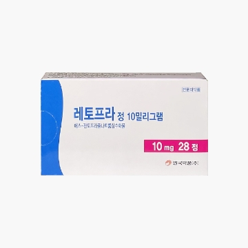
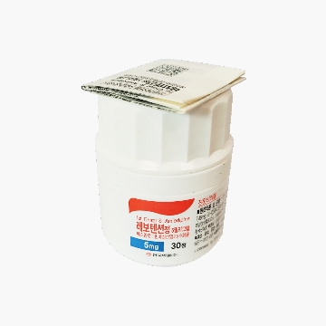
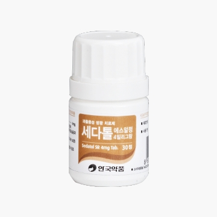
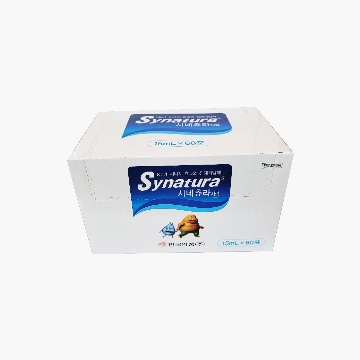
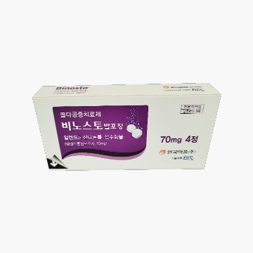
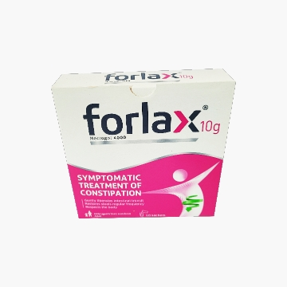

연구개발품목
R&D Product
안국약품의 기술로 삶에는 건강을
미래에 희망을 전하겠습니다.
연구개발품목.
R&D PRODUCT


레보살탄정
- 개요
- 1. 국내 최초 S-Amlodipine besylate와 Valsartan의 복합제입니다.
2. 우수한 혈압 강하 효과와 함께 상호 보완 작용에 의한 부작용 감소가 특징입니다.
3. 물리화학적으로 뛰어난 안정성 - 흡습성이 없어 별도의 알루미늄 포장이 필요하지 않습니다.
- 적응증
- 고혈압

레토프라정 (국내 최초 순수한 S-판토프라졸 제제)
- 개요
- 1. 레토프라는 Pantoprazole 제제와 생물학적 동등성이 입증된 S-Pantoprazole 제제입니다.
2. 레토프라는 Pantoprazole 제제의 절반 용량으로 동등한 효과를 나타냅니다.
- 적응증
- 소화성궤양용제
토비콤골드정 (바디비타민)
- 개요
- 1. 눈의 건조·피로감 및 면역 증강에 도움을 줍니다.
2. 활성형 비타민 B1, 벤포티아민 함유로 보다 신속하게 피로증상을 완화합니다.
3. 비타민C, 비타민E, 셀레늄, 아연 등의 항산화 성분이 노화의 주 원인인 활성산호로부터 세포손상을 억제합니다.
- 적응증
- 1. 육체피로, 임신 수유기, 노년기, 병중병후의 체력 저하 시 비타민A, E, B2, B6, C의 보급
2. 신경통, 근육통, 관절통, 구내·구순염 증상의 완화
3. 눈의 건조감의 완화, 야맹증
- 관련논문
- 1.Greb A et al, Int J Clin Pharmacol Ther, 1998;36(4):216-221.
2.Graharm W et al, Annual Review of Nutrition, 1990;10:357-82.
3.Miyazono S et al, Vis Neurosci, 2011 Nov;28(6):485-97.
4.Saenz-de-Viteri M et al, Medicine (Baltimore), 2016 Febl;95(6)e2680.
5.Bardia A et al, Mayo Clin Proc, 2008 Jan;83(1):23-34.
레보모스정
- 개요
- 1. 눈의 건조·피로감 및 면역 증강에 도움을 줍니다.
2. 활성형 비타민 B1, 벤포티아민 함유로 보다 신속하게 피로증상을 완화합니다.
3. 비타민C, 비타민E, 셀레늄, 아연 등의 항산화 성분이 노화의 주 원인인 활성산호로부터 세포손상을 억제합니다.
- 적응증
- 고혈압

레보텐션정 (국내 최초 순수한 S-Amlodipine 제제)
- 개요
- 1. 기존의 RS-Amlodipine은 이성절체인 S-Amlodipine과 R-Amlodipine이 50:50의 비율로 혼합된 화합물입니다.
2. S-Amlodipine은 혈압강하작용을 활성화시키는 유효성분이며 R-Amlodipine보다 칼슘채널차단 작용이 1000배 이상 강합니다.
3.레보텐션은 유호성분인 S-Amlodipine을 이용하여 선택적 칼슘채널차단을 합니다.
- 적응증
- 1. 고혈압
2. 관상동맥의 고정폐쇄
3. 관상혈관계의 혈관경련과 혈관 수축에 의한 심근성 허혈증
- 관련논문
- 1. J, Pharm Pharmaceut Sci, 2001;185-200.
2. JMA-India, 2004;3(11)71-14.
3. Chirality, 1993;5(1):15-19.
4. J, Cardiovasc, Pharmacol, 19995-25;25(2):268-272.
5. JAMA-india, 2004;3(1)71-75.
6. Chirality, 1989;1(3):209-215.
7. J, Clin, Bas, Cardiol, 1998;1:14-18.
8. Br, J, Pharmacol, 1988;95:55-66.
- 수상기록
- 1. 제 8회 대한민국 상품대상 기술혁신부문 대상 수상(2008년 5월 31일)
레보테놀정 (국내 최초 순수한 S-Atenolol 제제)
- 개요
- 1. 레보테놀은 Atenolol 제제와 생물학적 동등성이 있는 S-Atenolol 제제입니다.
2. 레보테놀은 고혈압 환자에 대한 Atenolol 제제와 비교임상시험에서 동등 이상의 혈압 강하효과가 입증되었습니다.
3. 레보테놀은 Atenolol 제제의 절반 용량으로도 동등이상의 혈압 강하효과를 나타냈습니다.
- 적응증
- 1. 고혈압
2. 협심증
애니코프
- 개요
- 1.Cocoa 또는 chocolate 에서 추출한 물질의 신개념 진해제. 코데인보다 비열등적인 진해효과
- 적응증
- 1. 비염, 비인후염, 부비동염에 의한 후비루, 만성기관지염에 의한 기침의 완하
- 관련논문
- 1. The antitussive effect of theobromine, caffeine and reference codeine, on 15% citric acid spray Induced cough model in guinea pig after oral administration (1997)
2. The time dependency of the antitussive effect of theobromine on 15% citric acid spray induced cough Model in guinea pig after oral administration (1997)
3. Testing the antitussive effect of theonromine during chronic treatment on 15% citric acid spray evoked cough model in guinea-pig (1997)
4. The effect of theobromine on the mucociliary clearance activity in rabbits airways(1997)
토비콤 - 에스
- 개요
- 1. 유럽에서 널리 사용되는 블루베리 추출물을 이용한 시력개선제
2. 생약과 비타민의 합리적 조화로 눈의 피로, 시력감퇴, 근시, 약시, 야맹증등을 예방 및 치료
3. 주성분인 안토시아노사이드는 모세혈관의 영양을 개선하고 손상된 모세혈관을 치유, 보호 및 강화합니다.
- 적응증
- 1. 안정피로, 시력감퇴, 고도근시, 야맹증 중심 및 주변 망막 변성에 의한 약시
- 관련논문
- 1. Vimo et al, Bollettino di Oculistica, 65, 1-12, 1986
2. Lietti A, et al, Arzneimittel – Frschung 26, 829-832, 1976
3. Cristoni A, et al, Farmaco 42, 29-43, 1987

세다톨 SR정 (과민성 방광치료의 뉴패러다임)
- 개요
- 1. 세다톨 SR정은 캡슐의 불편함을 정제로 개선하고 복용횟수와 크기를 줄인 차세대 Tolterodine 제제입니다.
- 적응증
- 1. 절박뇨, 빈뇨 또는 적방성 요실금과 같은 증상의 과활동성 방광 치료
- 관련특허
- 1. 조성물 특허출원(10-2006-007059)
애니펜 (100% 활성형 소염 진통제)
- 개요
- 1.애니펜정은 이부프로펜과 비교하여 차별화되는 100% 생체 활성형 소염 진통제 입니다.
- 적응증
- 1.급성 및 만성 관절염 : 만성 다발성 관절염, 류마티스성 관절염 등
2.관절증
3.염증성 류마티스 질환: 강직성척추염, 근육류마티즘 4.염증, 통증 및 발열을 수반하는 감염증의 치료 보조
- 관련특허
- 1.J Clin Pharmacol 36;7S-15S, 1996 J Clin Pharmacol 36;88-94S, 1996
2. J Clin Pharmacol 36;3S-6S, 1996

시네츄라시럽
- 개요
- 1. 서양의 아이비엽과 동양의 황련 조합으로 최상의 활성시너지를 보이는 진해거담제 개발. 안국약품㈜ 자체개발한 안전하고 우수한 진해, 거담 및 항염 활성물을 가진 천연물신약 5호
- 적응증
- 1. 급성 상기도 감염, 만성 염증성 기관지염
- 수상기록
- 1. 2011년 지식경제부 글로벌 선도 천연물신약 개발 사업 선정
R&D PRODUCT

루파핀정 (항히스타민 신약)
- 개요
- 1. 항히스타민 효과와 혈소판 활성인자(Platelet Activating Factor, PAF)를 억제하는 이중 작용(Daual action)
2. 약효 발현시간이 빠르며, 광범위하고 강력한 알레르기 반응 억제 및 항염증 효과
3. 항히스타민제 최초로 1년간의 장기 안정성 입증
- 적응증
- 알레르기성 비염 및 두드러기 증상 치료
- 관련논문
- 1. Mullol J, et al, Allergy, 2015.
2. Barron et al, Methods Find, Clin, Pharmacol, 2005;27(Suppl.2):161.
3. Rarris et al, Allergy, 2000;55(63):94-95.
4. Stuebner P, et al, Ann Allergy Asthma lmmunol, 2006 Jan;96(1):37-44.
5. Maiti R, et al, Arch Otolaryngol Head Neck Sung, 2010 Aug;136(8):796-800.
6. Maiti R, et al, J Durgs Dematol, 2011 Dec;10(12):1444-50.
7. Valero A, et al, Drugs Saf, 2009:32(1):33-42.
- 제휴사
- Uriach(스페인) : 2003년 출시 후 전세계 70여개국에서 판매 중

비노스토 발포정
- 개요
- 1. 물에 녹여 마시는 발포정 형태의 골다공증 치료제입니다.
2. 기존 정제보다 복약 편의성이 크고 위장관 자극이 적습니다.
- 적응증
- 폐경후 여성의 골다공증 치료, 남성의 골다공증 치료
- 제휴사
- EffRx(스위스) : 미국 FDA. 유럽 EMA 허가

폴락스
- 개요
- 신개념 성인 변비 증상 치료제
- 적응증
- 성인의 변비 증상 치료
- 제휴사
- Beaufor lpsen(프랑스) : 프랑스 변비 치료제 시장 점유율 1위(2003년)